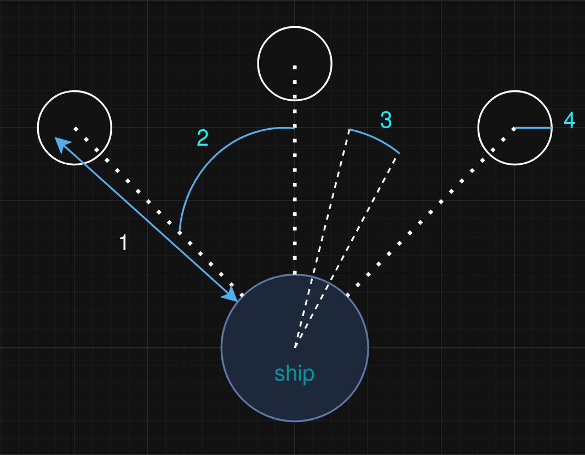

En bref
SlimeSimu est donc une Simulation de Slime ou bien de fourmis si on reduit leur nombre.
Les agents
Cette simulation a donc été réalisée en C avec la libraire GTK. Elle repose sur la nombreuse présence d'agent qu'on appelera aussi vaisseau.
Ces vaisseaux sont la plus petite entité de la simulation. Il se déplace à vitesse constante en suivant une direction précise. S'ils sont amenés à atteindre le bord de la carte, un nouvel angle les amenant vers le côté opposé. Leur fonctionnement repose sur plusieurs paramètres.

Afin de devenir vivant, il a besoin de différents facteurs :
- Distance de recherche
- Angle de recherche
- Intervalle d'angle de rotation de la trajectoire
- Rayon de la zone de recherche
Lors du passage d'un vaisseau, il dépose des phéromones. Ces phéromones sont les repères de ces agents et leur permettent de savoir qu'un camarade est passé ici récemment.
Ces phéromones se diffusent et dispersent au cours du temps.
Maintenant que nous connaissons mieux les vaisseaux et les phéromones qu'ils libèrent, il nous reste à faire qu'ils soient attirés par les phéromones. Leurs décisions suivent un principe assez simple.
Pour « sentir » son environnement, chaque vaisseau dispose de trois capteurs qui regardent un peu en avant : un devant lui, un légèrement vers la gauche et un légèrement vers la droite. Chaque capteur mesure la quantité totale de phéromones présente dans la petite zone qu'il observe. Le vaisseau compare ensuite ces trois valeurs et oriente sa trajectoire vers la direction la plus « parfumée ».
si devant contient le plus de phéromones → continuer tout droit sinon si gauche et droite sont meilleures que devant → faire un léger écart aléatoire # hésitation sinon si gauche > droite → tourner vers la gauche sinon si droite > gauche → tourner vers la droite sinon # égalité parfaite → choisir un côté au hasard
Deux cas méritent un mot. Lorsque la gauche et la droite sont toutes deux plus attirantes que devant, il n'y a pas de « bon » choix évident : plutôt que de figer le vaisseau, on lui fait faire un tout petit écart aléatoire. Ce léger bruit évite que tous les agents restent bloqués sur les mêmes trajectoires et donne à la simulation son aspect organique.
Enfin, le vaisseau ne pivote jamais d'un coup : à chaque pas il ne corrige son cap que d'un petit angle. Les chemins ne sont donc pas tracés au cordeau mais se courbent progressivement, ce qui fait émerger les réseaux et les filaments caractéristiques des colonies de fourmis et des slimes.
Comment marche la simulation ?
Maintenant que nous avons un vaisseau capable de suivre des phéromones, il ne nous reste plus qu'à en disposer un grand nombre dans une carte assez grande et de laisser la magie opérer.
Performance
Afin de pouvoir rendre ce projet agréable visuellement, j'ai dû me tourner vers l'utilisation de calcul GPU afin de faire tout ses calculs et cet affichage image par image.
Démonstration
Le Simulateur en action :
Implémentation de différentes formes
Pour le plus grand plaisir de mes yeux, j'ai implémenter la possibilité de choisir 2 formes d'où patent toust ces agents. Il est donc possible de choisir une forme parmis un cercle et un disque. Si aucune forme n'est choisie, l'apparition des agents se fera de manière aléatoire à travers la carte.
On a donc ici l'utilisation de la forme de disque.
Utilisation cette fois de la forme circulaire.
Action utilisateur
Afin de rendre cette expérience interactive et de pouvoir expérimenter des choses sur la simulation, vous avez la possiblité d'étourdir (avec le clic droit de la souris) les agents en les empêchant de prendre leur décision. Il est également possible de déposer des phéromones (avec le clic gauche).
Galerie